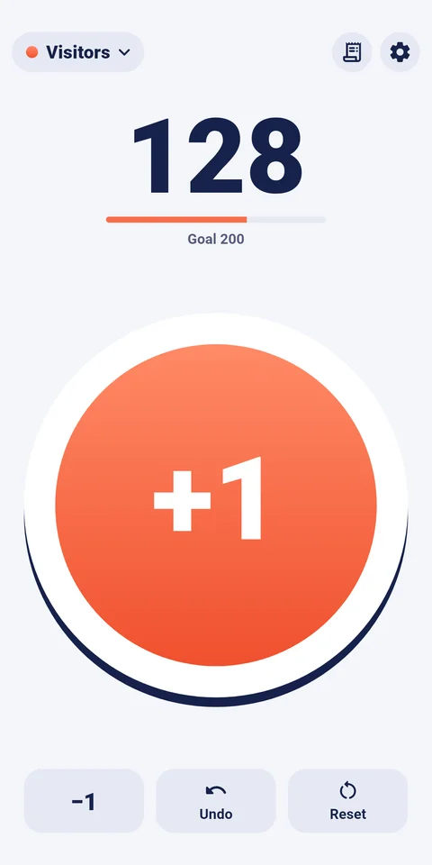
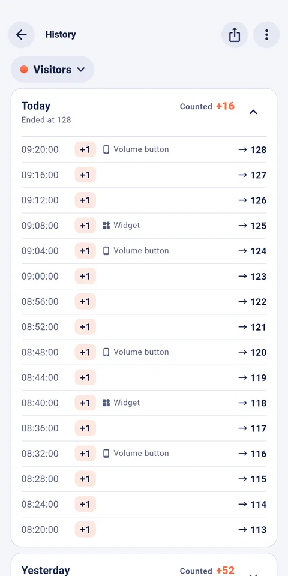
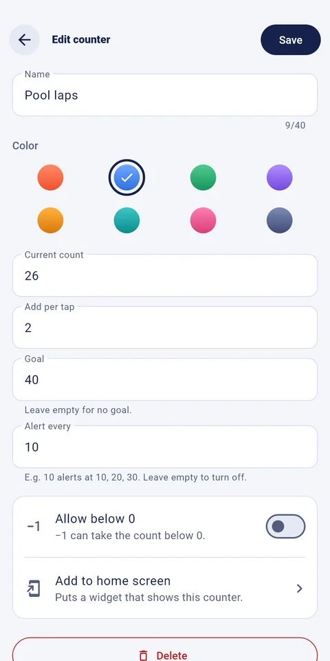

Screenshots






App Info
| App Name | TapAlot |
|---|---|
| Version | 1.0.0 |
| Developer | Willee Project |
| Platform | Android |
A counter app where every tap adds one. Use it whenever you need to count how many: visitors, stock, workouts, knitting rows.
- There is no sign-up and no login. The counters you make and their history are stored on your device.
- It works offline. The internet is used only for the ad at the bottom of the screen and for usage statistics and crash reports.
- The language follows your device settings. English, Korean, Japanese and Chinese (Simplified and Traditional) are supported, and you can pick one in Settings.
- Every change is saved to the device the moment it happens (chapter 9).
1. Getting started
- When you open the app, the counting screen of the counter you used last opens right away. The first time, it is Counter 1.
- Tap the counter's name in the top bar to go to the Counters list. You make new counters there (chapter 3).
- Besides the counter name, the top bar has the History button (chapters 5 and 6) and the Settings button (chapter 8).
2. Counting
The counting screen shows the current count large in the middle, with a big +1 button below it. Under that button are Subtract 1, Undo and Reset.
- The +1 button counts the moment your finger touches it. It does not wait for you to lift off, so you can tap as fast as you like. Only the round button reacts; touches outside the circle do not count.
- Subtract 1 lowers the count by 1. By default the count does not go below 0 (Allow below 0 in chapter 4).
- Undo takes back the last change (add, subtract, reset or edited). Tap it again to undo the change before that, and so on.
- Reset sets the count to 0. A "Reset to 0?" window asks first. The current count stays in the history, and Undo brings it back.
- When the count changes, the number bounces. Turn on Reduce effects in Settings, or turn off animations in your phone's accessibility settings, to stop it.
- The narrow strip between the buttons and the ad does not react to touches.
3. The counter list
Tap the counter's name in the top bar to open it. You can make as many counters as you like.
- Tap a counter to open its counting screen.
- Tap New counter at the top to make one.
- Tap Edit counter at the end of a row to change it (chapter 4).
- Change the order: drag a row by its handle, or touch and hold a row and drag it.
- Delete is on the edit screen. After deleting, "Deleted: name" and Undo appear for a moment. A deleted counter stays for 7 days at the bottom of the list under Recently deleted ("Removed in N days"); tap Restore there and it comes back with its history. After 7 days it is removed together with its history.
- When only one counter is left, it has no Delete button. There is always at least one counter.
- Export all (CSV) at the top sends the history of all counters as a file (chapter 6).
4. Editing a counter
| Item | What it does |
|---|---|
| Name | The counter's name, up to 40 characters. If you leave it empty, a numbered name such as "Counter 1" is shown |
| Color | Pick one of 8 colors. It is used on the counting screen and the widget |
| Start at | Only when making a new counter. The first count |
| Current count | Shown when you edit an existing counter. If you change it, an "Edited" record is added to the history and Undo can take it back |
| Add per tap | How much one tap on the +1 button adds (1 to 9999). The default is 1 |
| Goal | Leave it empty for no goal (chapter 5) |
| Alert every | For example, 10 gives a sound and a buzz at 10, 20, 30. Leave it empty to turn it off. It also alerts when a large Add per tap skips over a multiple. Subtract and Reset never alert |
| Allow below 0 | When on, Subtract 1 can take the count below 0. Off by default |
- Changes apply only when you tap Save.
- Add to home screen puts a widget that shows this counter (chapter 7).
- Delete deletes this counter (chapter 3).
5. Goal and history
Goal
- When a counter has a goal, a progress bar and "Goal 50" appear under the count.
- When the count reaches the goal, the text changes to "Goal reached" and you hear a sound and feel a buzz. Sound and vibration follow your settings (chapter 8).
History
Open it with the History button in the top bar. It shows one line for every change of the count.
- It first shows the counter from the counting screen. Tap the counter name button at the top to pick another counter and see its history. The counter on the counting screen does not change.
- Records are grouped by the local date at the time. A day shows Counted ("Counted +16": added minus subtracted that day; resets and edits are not included), Ended at ("Ended at 120": the count at the end of that day) and how many times you reset ("Reset 2 times").
- Tap a day to open it and see that day's records, newest first. Each record shows the time, what changed (add, subtract, reset, edited), the amount and the count, and records made with the volume buttons or the widget carry that mark. On a very busy day only the latest 500 are shown (the export has them all).
- When there are more than 200,000 records, the oldest days are kept as Daily total only. Such a day has no lines when opened, and the end of the history reads "Older records are kept as daily totals." Today's records are never reduced.
- Clear history in the menu at the top right deletes all records of this counter. The current count stays.
6. Export (CSV)
The history is made into a CSV file. When you tap the button, choose Share or Save to device.
- Share: sends it to your device's share sheet. You choose the app that receives it (email, cloud storage and so on).
- Save to device: pick a folder and a name in the save dialog and save the file on this device. "Saved to your device." appears when it is saved.
- One counter: tap the Export (CSV) button at the top right of the history screen. It exports the counter you are viewing there.
- All counters: tap Export all (CSV) on the counter list.
- While the file is made, "Making the CSV file…" is shown. If it fails, you see "Couldn't make the file. Please try again."
- The columns are Counter, Date, Time, Change, Amount, Count and Source. A day that was reduced to a total becomes one Daily total line.
- It opens in spreadsheet programs.
- The file holds counter names and history. It is not sent to us, but whoever receives it can read it, so please check before you send.
7. Home screen widget
Count from the home screen by tapping, without opening the app.
Adding one
- From the app: tap Add to home screen on the counter's edit screen. A widget that shows that counter is placed. If your phone cannot add it from the app, an "Add a widget" note appears. The app opens that counter; touch and hold an empty spot on your home screen, tap Widgets and drag TapAlot there.
- From the home screen: touch and hold an empty spot and drag the Counter widget of TapAlot from the widget list. A widget added this way shows the counter you used last.
Using it
- Tap the widget and the count goes up by the Add per tap, with a short buzz, without opening the app. The buzz follows the app's Vibration setting. There is no sound.
- If the counter has a goal, the widget shows the progress too.
- Tap the small icon at the top right (Open app) to open the app.
- Make the widget smaller and it shows only the number.
- Taps on the widget are added to the history the next time the app opens or comes to the front, marked "Widget". If you tapped by mistake, use Undo in the app.
- If you delete a counter, its widget shows "Tap to open the app", and tapping it opens the app.
8. Settings
Open them with the Settings button in the top bar of the counting screen. There are two groups.
Sound & effects
| Item | What it does |
|---|---|
| Sound effects | Turns the tap and goal sounds on or off |
| Vibration | Turns the tap and goal vibration on or off. The widget's buzz follows it too |
| Reduce effects | Tones down effects such as the bouncing number |
| Keep screen on | Keeps the screen on while you are on the counting screen, until 10 minutes after the last tap. On by default |
| Count with volume buttons | When on, the volume-up button adds and the volume-down button subtracts 1. It works only on the counting screen, and while it does the buttons do not change the volume. It does not count while the screen is off. Off by default |
Records made with the volume buttons are marked "Volume button" in the history.
General
| Item | What it does |
|---|---|
| Language | Follow the Device language (default) or pick from the list (English · 日本語 · 한국어 · 简体中文 · 繁體中文) |
| Privacy options | Reopens the ad consent window. Shown only in regions where consent is required (such as Europe) |
| About | The version, this guide (How to use), Rate on Google Play, Privacy policy, Open-source licenses, More apps (opens the store) and See all apps |
The screen colors follow your device's dark mode. There is no separate switch in the app.
9. Saving, backup and ads
- Saving: every change is saved on the device right away. Your count stays even if you close the app or force it to stop. Once a day the app keeps one copy of its save file in a place that automatic backup leaves out, used only to restore it if the file is damaged.
- Backup: if Google backup (Android Auto Backup) is on, the counters, history and settings are backed up too and come back when you switch devices or reinstall the app. You can turn it off in the backup menu of your Android settings. Uninstalling the app deletes its data on the device.
- Ads: there is a single banner ad at the very bottom of the screen. It is the only ad, and there is a margin between the big button on the counting screen and the banner. The ad strip is hidden when the keyboard is open. In regions where consent is required (such as Europe), an ad consent window appears the first time you open the app, and you can change it later under Privacy options in Settings.
- There are no in-app purchases, and nothing is sent to a server.
- For details, see the Privacy Policy.